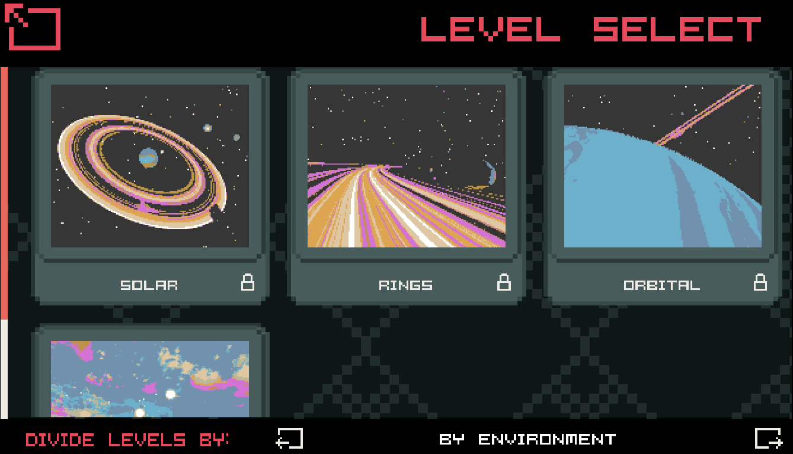
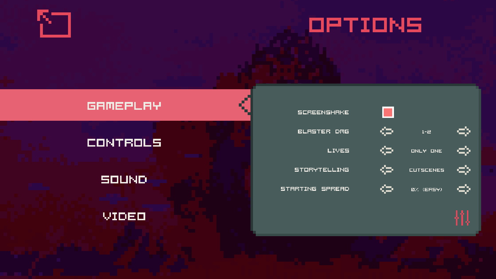
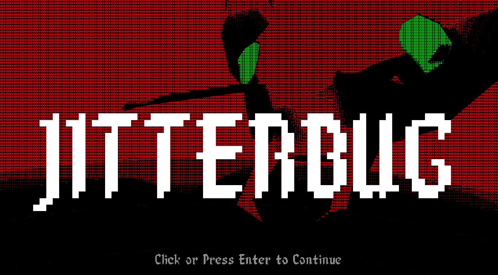
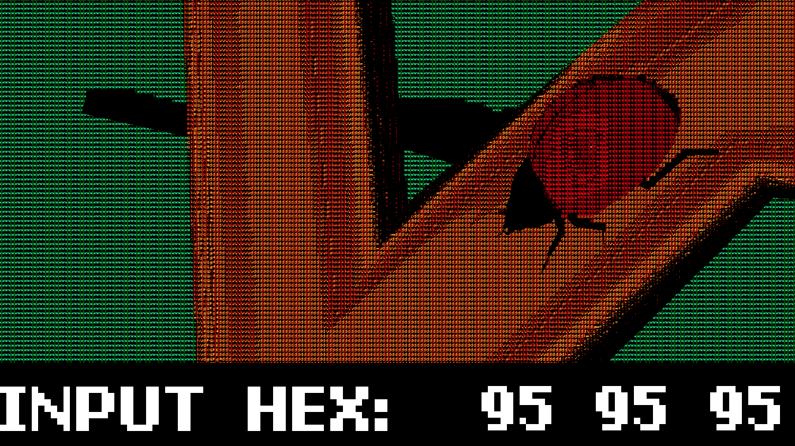
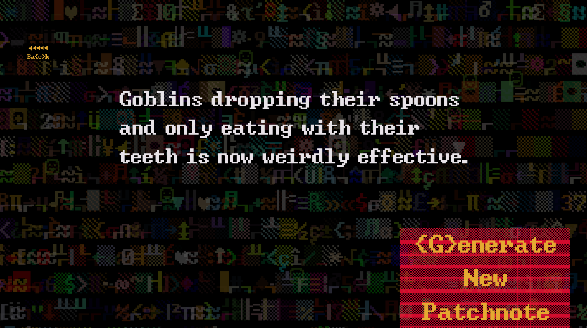

MENU NEW GAME PLUS
Games
Main menus are the first thing we see when they start a video game. We often ignore them entirely. But through a main menu, it’s possible to envision an entire game: from its atmosphere and graphics to its gameplay and story, we immediately get a sense of the whole.
MNG+ explores this marginal, ignorable corner of games by presenting a series of main menus for games that do not exist. Each menu invites the audience to imagine a specific game with its own history of development, gameworld, set of mechanics, graphical style, and so on. It is a work of magical realist interactive fiction.
To play: take the time to explore a menu and imagine its game, then click the 'new game.’ MNG+ will take you quite literally and give you a whole ‘new game.’
MNG+ is an alpha release and a work in progress.
Press
- "MNG+ has loads of little things to find in the nesting menus, and functions as a bit of a meta in-joke about games as well as a chin-stroking metaphor that makes you feel like a clever, cultured person for at least half an hour."
- review by Alice Bell of RockPaperShotgun
- "An esoteric piece of magical realism, in which non-existent games are implied through navigable menus, presented in retro textures in almost unintelligible colours. I love it. [. . .] Each [menu] is a different genre, wryly observing different aspects of gaming, and with so many clever ideas hidden away."
- review by John Walker of Buried Treasure
- review by game-curator.com
Shown at
- MUTEK 2021 in Montreal
- Ars Electronica 2021 in Linz, Austria
- The 13th International Conference on Interactive Digital Storytelling (ICIDS 2020)
- PAX/EGX 2020 Leftfield Collection
- Synchrony 2020 at Babycastles/Shopify in NYC/Montreal (winner of the 'Wild' category)
What I did
- Design, conceptualization, writing
- Unity, C#, modeling in Blender and Houdini, texturing in Substance Painter, UI in Affinty Designer and Photoshop
- Music and sound effects in Logic Pro X
Nitty Gritty
- Year: 2020 (still in development)
- Material: custom code, Unity game engine
- Neural net generated text using GPT-2